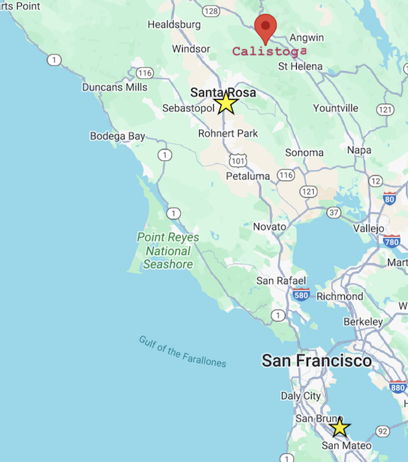

We're thrilled to share our special day with you! To help you navigate your way to our celebration, we've put together some travel instructions and tips for accomodations.
The closest airport is Sonoma County Airport in Santa Rosa, however, most of you who are flying in will most likely fly into San Francisco (SFO) which is approximately 80 miles from the wedding venue. It will take about 1.5 hours by car from SFO to Santa Rosa, about 2h by car from SFO to Calistoga.
We will be staying at the Flamingo Resort in Santa Rosa. You can join us and book your room via their website. The nightly rate should be around 400 USD at that time of year. There are more budget friendly hotels in downtown Santa Rosa about a 10 min drive from the Flamingo, such as the Hyatt, Courtyard, and AC Hotel that were recommended to us. If you decide to stay directly in Calistoga, Dr. Wilkinson's Backyard Resort & Mineral Springs or Solage are nice places to stay.
The wedding will take place at Branch House, located on Diamond Mountain Road in Calistoga. There is no parking available at the venue. If you plan on driving please park nearby the shuttle locations in Santa Rosa or Calistoga.
To get to the wedding we have organized shuttles that pick and drop off people in Santa Rosa and Calistoga. To get there from the airport we recommend taking an Uber or Lyft, renting a car, or use the Sonoma County Airport Shuttle, which runs every hour out of SFO. If you decide to take an Uber/Lyft outside of San Francisco we recommend that you schedule the ride in advance. Alternatively you can try one of the local taxi companies. If you stay in Calistoga you can use the Calistoga Shuttle to get around.